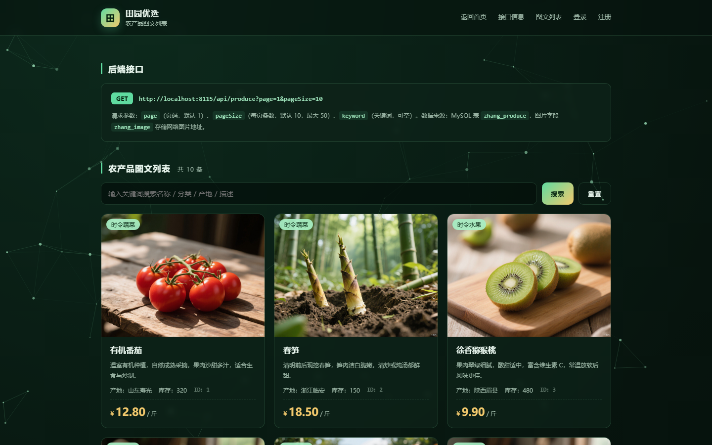

前台功能 · 03
农产品图文列表
农产品图文列表，展示商品图片、名称、产地、价格与简介，支持搜索、分类筛选与分页浏览。
produce.html

页面说明
页面以卡片形式展示农产品，图片统一使用固定比例容器，保证不同尺寸图片排列整齐；点击卡片进入对应详情页查看完整介绍。
搜索与分类条件通过查询参数传给后端，后端完成筛选与分页后返回当前页数据与总条数。
功能要点
- 图文卡片：封面、名称、产地与价格
- 关键词搜索与分类筛选
- 分页切换与总数展示
- 详情跳转：按商品编号请求详情
- 图片懒加载与失败占位
接口说明
| 方法 | 接口路径 | 说明 |
|---|---|---|
| GET | /api/produce |
分页查询农产品列表，支持 keyword、category、page、pageSize 参数 |
相关文件
produce.html
js/produce.js
backend/routes/produce.js